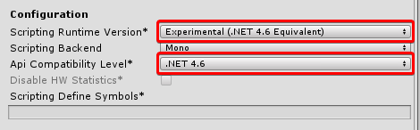
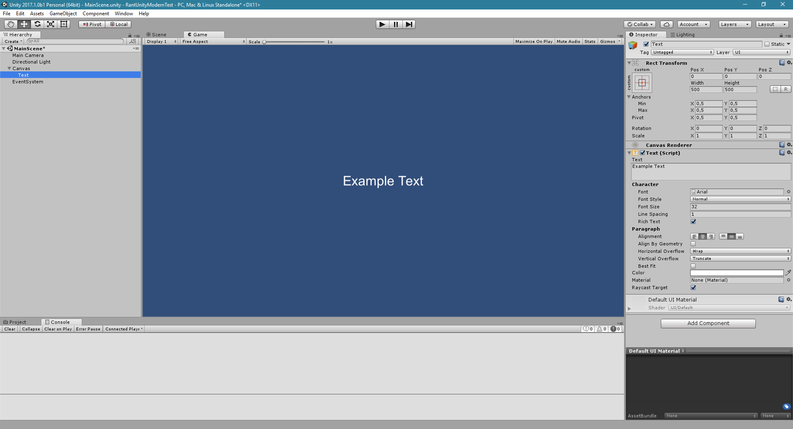
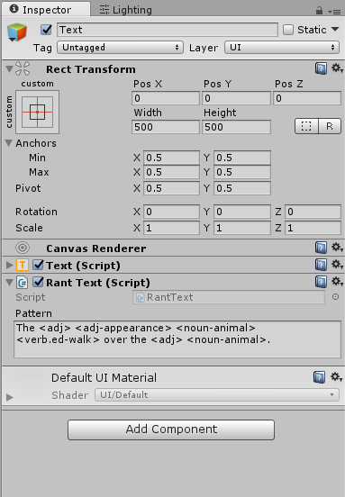

Running in Unity
This article demonstrates how to install Rant into a Unity project and get patterns running with a simple script on a UI element.
You will need to be using Unity 2017.1.0 (beta or newer) in order for Rant to work.
Step 1: Get Rant[link]
You can acquire Rant by downloading a pre-built binary, or by compiling it yourself.
Download binary[link]
You can download the latest build from AppVeyor.
From source[link]
To build from source, choose the Release build configuration within Visual Studio and build the project. You can then find the built DLL at Rant/bin/Release/Rant.dll.

Step 2: Add Rant to Unity project[link]
Add Rant.Unity.dll to your Unity project's Assets folder and it will be automatically imported as a reference to the project.

Make sure your Scripting Runtime Version and Api Compatibility Level are set to .NET 4.6.
Otherwise, you will encounter import errors.

You can find these settings in Edit > Project Settings > Player.
Adding Rant resources[link]
Rant can load resources using streaming assets, which are files that are copied along with the player
instead of packaged with the rest of the assets. Simply drop your .rantpkg files in your StreamingAssets
folder and load them from the path given by Application.streamingAssetsPath.
Alternatively, if you want combine your .rantpkg files with the rest of your assets,
you can add them to your Resources folder and then load them with RantPackage.Load(System.Stream):
var asset = Resources.Load("MyPackageName") as TextAsset; var stream = new MemoryStream(asset.bytes); var package = RantPackage.Load(stream);
Note
If you're importing packages into your Resources folder, you must change the extension from ".rantpkg" to ".bytes" in order for Unity to import the asset.
Step 3: Set up a scene[link]
Let's set up a basic demo to show how Rant can be used from a GameObject.
To start, creates a blank 2D scene and add a UI Canvas with a Text element.

Once you're happy with your UI, add a new script to your Text element and
name it RantText. Copy the following code to the script:
using System.IO; using UnityEngine; using UnityEngine.UI; using Rant; using Rant.Resources; public class RantText : MonoBehaviour { private RantEngine rant; [TextArea] public string Pattern = "The <adj> <adj-appearance> <noun-animal> <verb.ed-walk> over the <adj> <noun-animal>."; void Start() { // Load Rant and package rant = new RantEngine(); var pkgAsset = Resources.Load("Rant/Rantionary-3.0.0") as TextAsset; using(var pkgStream = new MemoryStream(pkgAsset.bytes)) { rant.LoadPackage(RantPackage.Load(pkgStream)); } // Run pattern and set UI text to output var text = GetComponent<Text>(); var pgm = RantProgram.CompileString(Pattern); text.text = rant.Do(pgm).Main; } }
This script assumes you have a Rant package in your Resources folder. Replace the package resource path with the one corresponding to your package. You may simply omit the package-loading code if you don't have a package on hand to use.
The Inspector should now show your component with a Pattern field, which you can use to customize the pattern passed to Rant.

Important
Although engine and package loading is handled in the Start() method here, this is simply for demonstration; you should handle RantEngine initialization and package loading only once and share the RantEngine between all components that need it, rather than loading a new engine for each component like we do here.
Step 4: Test it out[link]
Run the game and you should see the UI text change to a randomized output:

Congrats! You got Rant working in Unity. Where will you take it from here...?
A few ideas for further experimentation:
- Modify the script to run a serial pattern (using
DoSerial) and have the script cycle through a number of outputs with a time interval. - Use channel names to determine the component properties overwritten by the output.
- Use Rant to generate numbers, colors, and other useful properties!
-
Pass component field values as Rant variables and use them in a pattern to affect the output.
(e.g. Generate a dynamic status message based on the player's current health.)